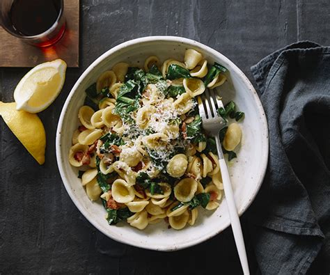
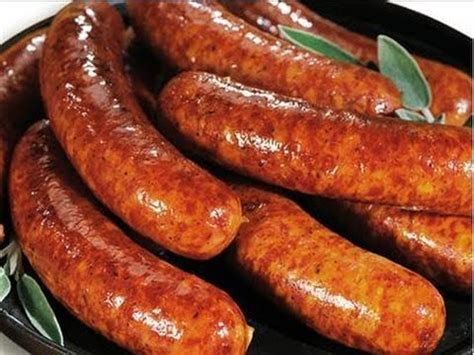
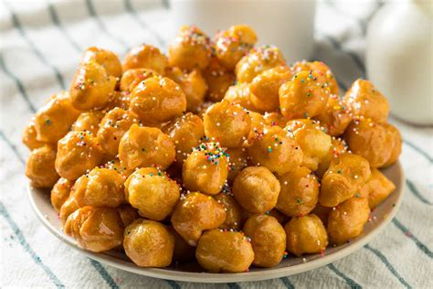
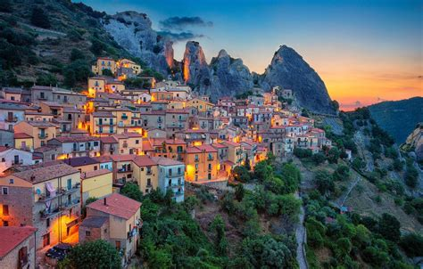
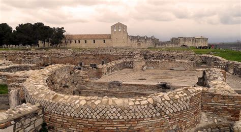
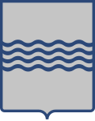

Basilicata
Panoramica
La Basilicata è una piccola regione montuosa del sud Italia, situata tra la Calabria e la Puglia. È conosciuta per i suoi paesaggi spettacolari che includono montagne, colline e coste sul Mar Tirreno.
Offre una fuga tranquilla dai luoghi affollati, con città antiche, siti archeologici e tradizioni secolari.
Fatti in Breve
- Capoluogo: Potenza
- Lingua Regionale: Dialetti lucani
- Popolazione: Circa 570.000
- Famosa per: Paesaggi montani, città antiche, tradizioni locali
- Curiosità: Matera è famosa per i “Sassi” ed è patrimonio UNESCO
Piatti Tipici
Orecchiette con cime di rapa

Salsiccia lucana

Peperoni cruschi

Pignolata

Luoghi Famosi
Matera

Castelmezzano

Parco della Murgia

Venosa

Policoro

Quando Visitare
I mesi ideali sono maggio, giugno, settembre e ottobre. Perfetti per escursioni, visite culturali e cucina locale con clima mite e pochi turisti.
Simboli Regionali
- Bandiera:
- Stemma: 